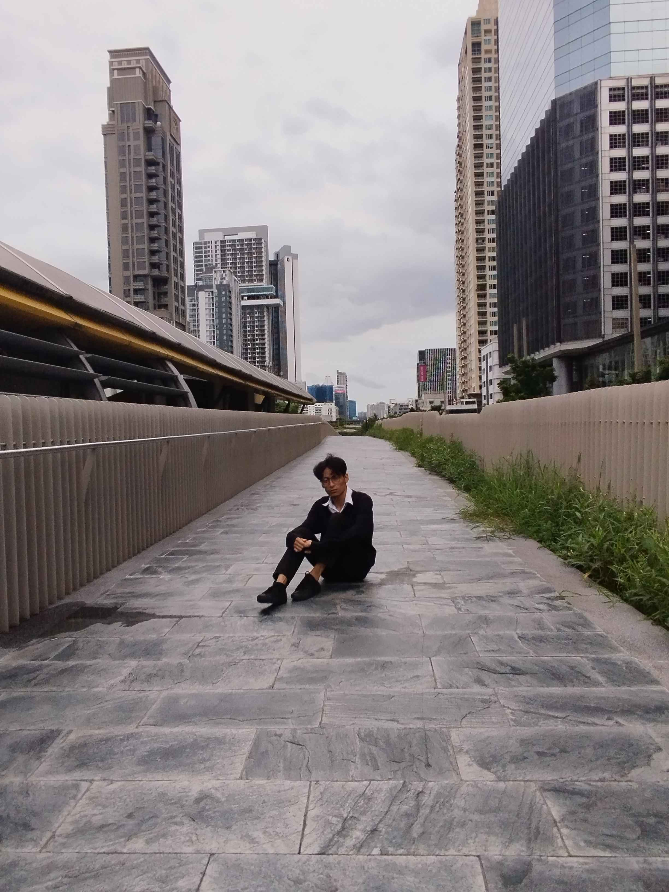

Amidst the emptiness
ในภาพนี้ ผมนั่งอยู่บนทางเดินหินที่ยาวและกว้าง ทำให้ดูเหมือนมีความลึกและยาวไม่มีที่สิ้นสุด ฟ้าครึ้มที่มีเมฆมากทำให้บรรยากาศดูเงียบสงบและสงบเงียบ ทางเดินที่ผมนั่งอยู่จึงดูเหมือนเป็นที่ที่เหมาะสมสำหรับการพักผ่อนหรือครุ่นคิดถึงสิ่งต่างๆ ในท่าทางที่ดูผ่อนคลายนั้นแต่ก็แฝงไปด้วยความคิดลึกซึ้ง สีหน้าของผมดูเรียบเฉยแสดงให้เห็นถึงความสงบนิ่ง ทว่าก็อาจจะสื่อถึงความเหงาหรือความคิดคำนึงบางอย่างในใจ
HOME